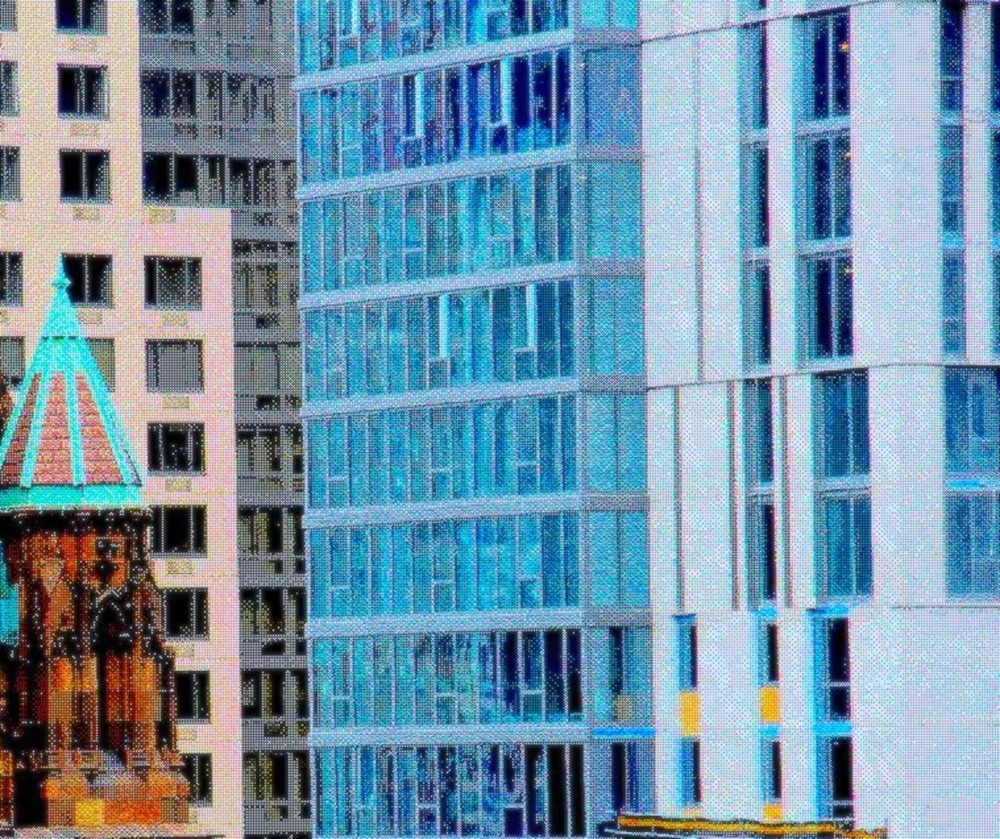
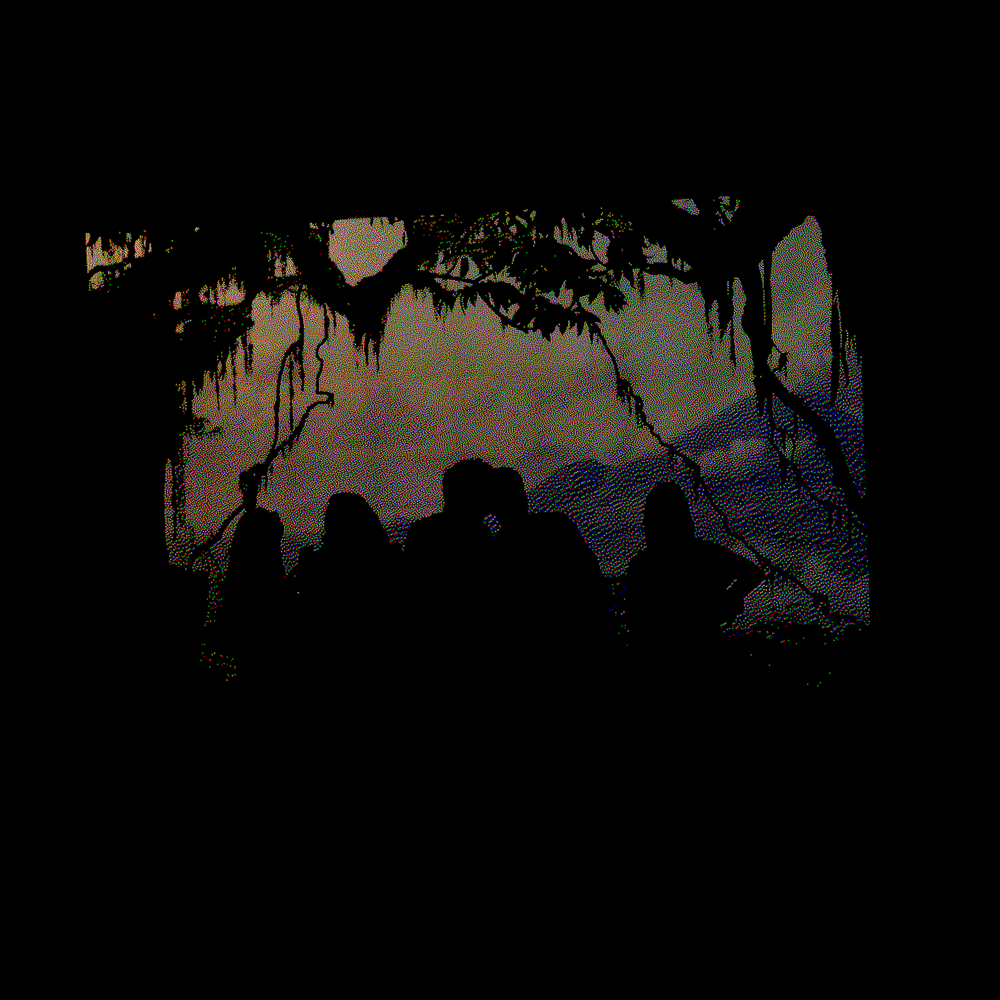
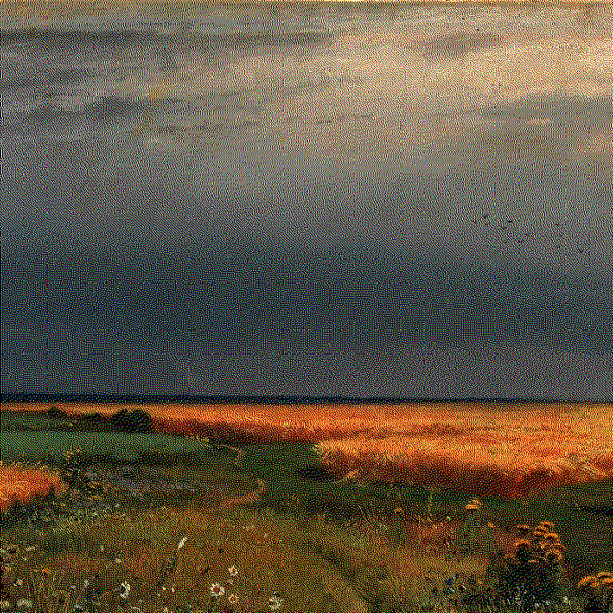

The other week, I found a small shoebox beneath the bed.
It had clearly been there for some time: the box was stuck between an expired passport and a little bag containing a pair of cufflinks.
One had been crushed, somehow without the box being harmed. Another I had apparently reformatted and named 'tourmaline_start_en00'.
I have no clue what that means. Google tells me something to do with Magic: The Gathering. I prefer to read this less as an indicator of dissociative kleptomania than an indictment of Google's new 'search' strategy.
my ephemeral relationship with my camera. It might come out after a break up: get a shot of that dead tree. I feel better. I can learn to love again because I have captured the temporality of a log.
Third card. I find a shot of the spire of the Holy Trinity Church (on E 88th & 1st), a view from the window of my old apartment (who lives there now?),
and last: a photo of a very fat man asleep, shirtless, sprawled on a towel in the middle of the Great Lawn, clasping a small bong in his right hand.
Not pictured below for his privacy, wherever he is... but fondly remembered.
I applied Floyd-Steinberg dithering, Atkinson dithering, and a novel form I'm working on called 'reservoir dithering' to a few of these to get the images below (there will be another post detailing the math/method in reservoir dithering).
Historically I've used the same process for a few album/single covers, which are also included. Some are greyscale and some RGB.
End goal: a library for all the other people who have difficulty paying attention to one thing at a time. Probably.
There are countless little visual techniques which are simple for me to consolidate and modify, but difficult for digital artists to easily access. Starting with standard dithering and
pixel sorting implementations; hope to afterwards strike out into experimental image processing methods (we’ll see). Keeping it simple for now.
spire
the aforementioned church
the aforementioned church

maurice bendrix [1]
a few friends silhouetted against Kilimanjaro (Natural History Museum, diorama hall)
a few friends silhouetted against Kilimanjaro (Natural History Museum, diorama hall)

nyc night
taken from my old apartment on 86th
taken from my old apartment on 86th
nyc night detail
the night line of ambulances outside the nursing home down the street
the night line of ambulances outside the nursing home down the street
chronophobe 2
cover: cheating a little: micro subset of Ivan Shishkin's In the Rye (1866)
cover: cheating a little: micro subset of Ivan Shishkin's In the Rye (1866)

amoroso 3
cover: also not one of my photos yet loved the sense of movement - dance with the cards you're given?
cover: also not one of my photos yet loved the sense of movement - dance with the cards you're given?